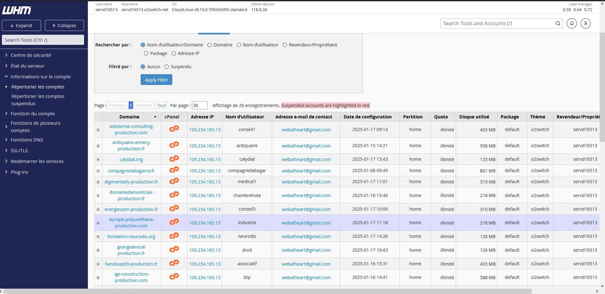
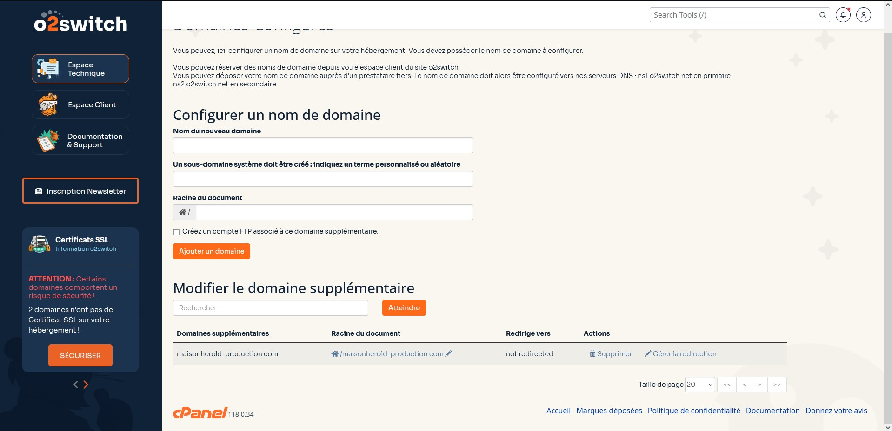
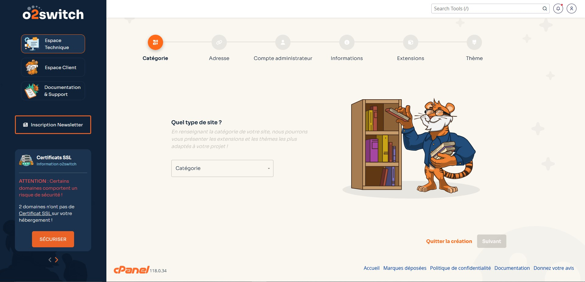
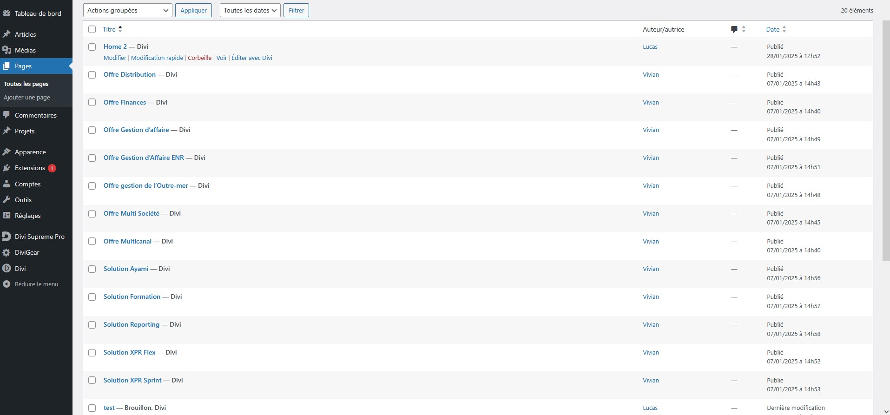

Présentation de l'entreprise
Elixir Création est une agence web qui créer et héberge des sites vitrine ou e-commerce.
Développement :
Travaux Réalisé :
- Création de site internet via WordPress
- Réparer de problème entre les plugins
- Copie/modification de sites internet hébergé
Mission 1: Migration de sites sur un autre serveur (o2Switch)
Il a fallu tout d'abord créer des catégories pour ranger les sites web.
Ensuite, il m'a fallu référencer le nom de domaine dans le serveur, pour la redirection.
Enfin, une fois la redirection terminée, j'ai crée le WordPress pour chacun des sites web.
Mission 2: Utilisation d'un plugin de copie de site
Utilisation d'un plugin appelé "Duplicator".
Ce plugin permet de copier un site web, pour le coller sur une autre adresse URL.
Avec ce plugin, il m'a fallu copier un site internet afin de l'utiliser comme modèle pour la construction d'un autre.
Mission 3: Devoir réalisé/créer des sites en fonction de cahier des charges/maquettes
Il fallait pour commencer créer un WordPress de production pour le site.
Une fois équipé des maquettes/cahier des charges requis, le travail pouvais commencer.
Note : Il se pouvait que nous ayons à faire des entretiens avec les clients pour discuter de changements, ou de l'avancement du projet.
Nous avons souvent adopté la même logique, c'est-à-dire, création de toutes les pages en premier, puis on commençait le contenu des pages prioritaires (accueil, contact..) (image1 et image2).
Bilan :
Compétence acquise :
- Savoir suivre une maquette, un plan
- Savoir comprendre les attentes des clients
- Savoir s'adapter en fonction des demandes